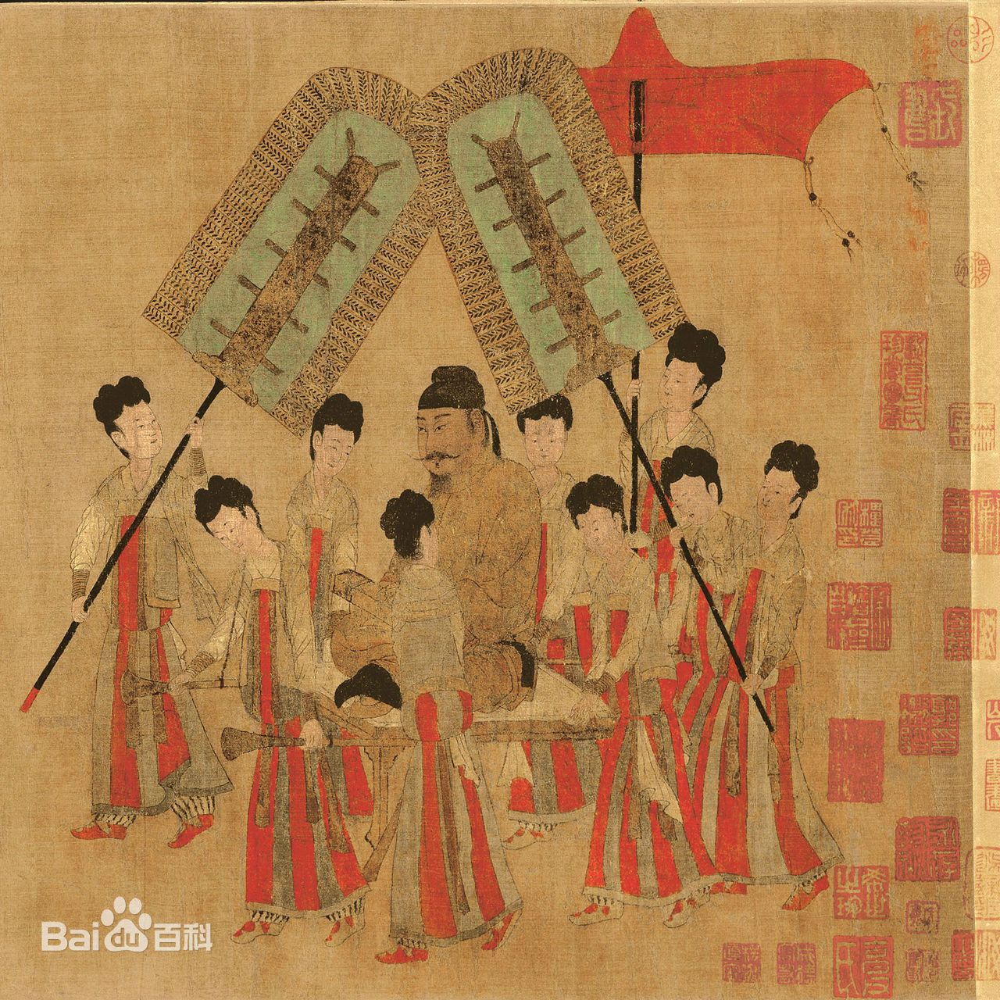
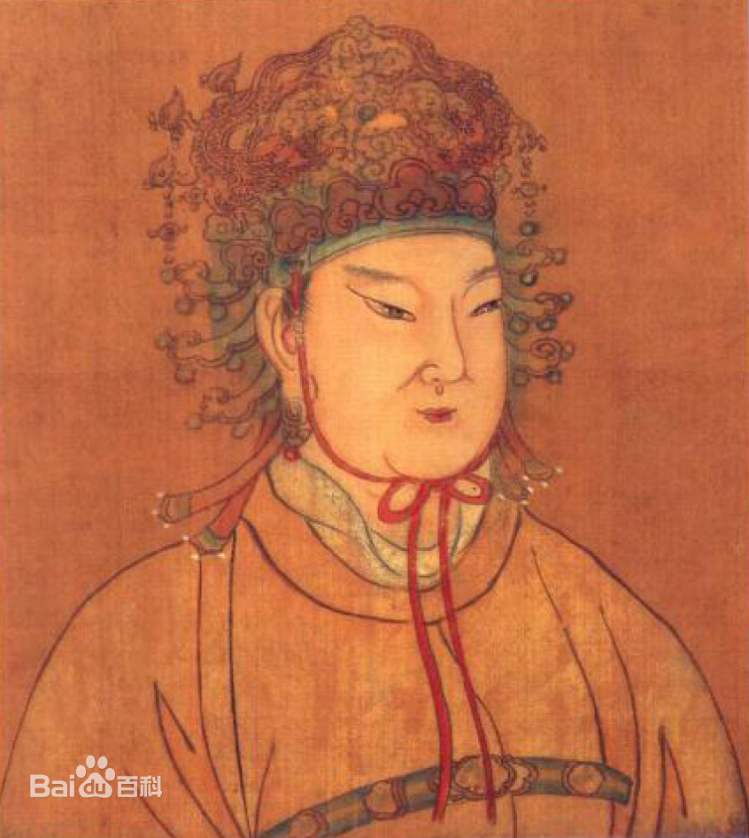
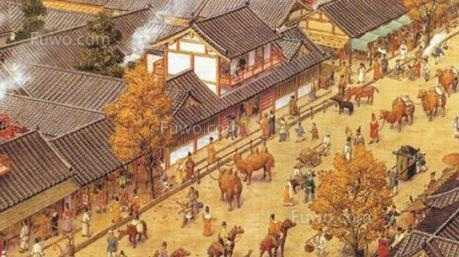
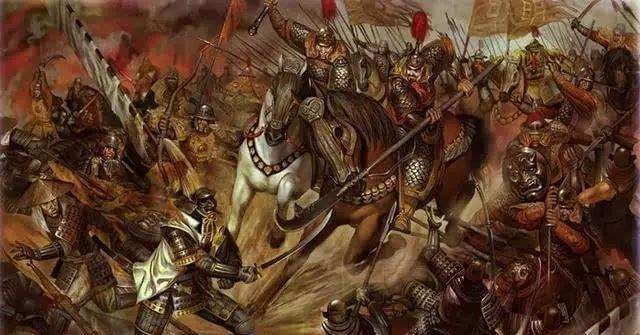
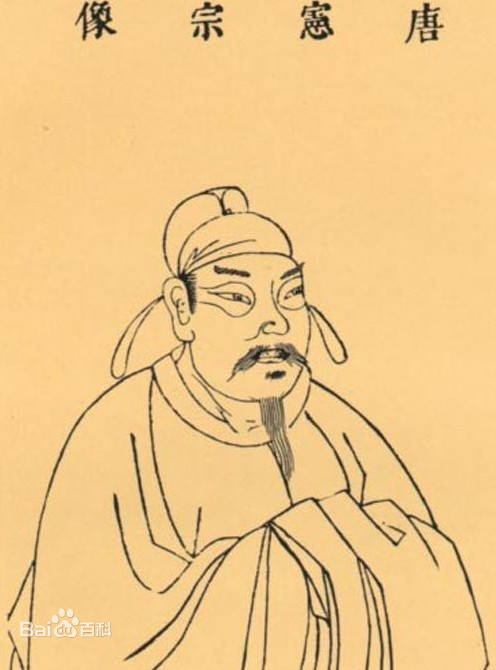
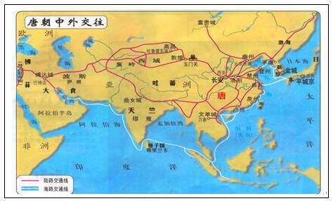

Great Tang
Home
Timeline
Culture
Ouyang Xun
Yan Zhenqing
Poem
Arts
Economy
Contact
Glorious history

贞观之治
是唐朝初年唐太宗在位期间出现的清明政治，经济复苏，文化繁荣的治世局面。

武周篡唐
690年，武则天御则天门即皇帝位，改国号为周，定都洛阳，成为中国历史上唯一的女皇帝。

开元盛世
李隆基登基以后整顿诸多弊政，整饬吏治，推崇节俭、抑制佛教，唐朝国力空前强盛逐渐步入盛世，史称“开元盛世”。

安史之乱
公元755年十一月，安禄山趁唐朝政治腐败、军事空虚之机发动叛乱，次年攻入洛阳，唐玄宗率众逃至成都，史称“安史之乱”。

元和中兴
唐宪宗在位15年间，政绩较多，在政治上有所改革，勤勉政事，并重振中央政府的威望，成就了唐朝的中兴气象，唐朝获得再次统一。

丝绸之路
唐朝的丝绸之路有所开拓，将南北朝以来因战乱而中断的部分路段进行了疏通，并开通了天山北路的一段。